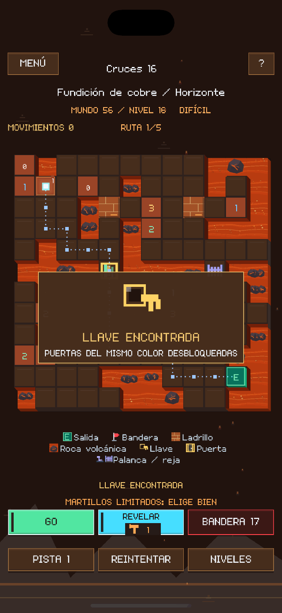
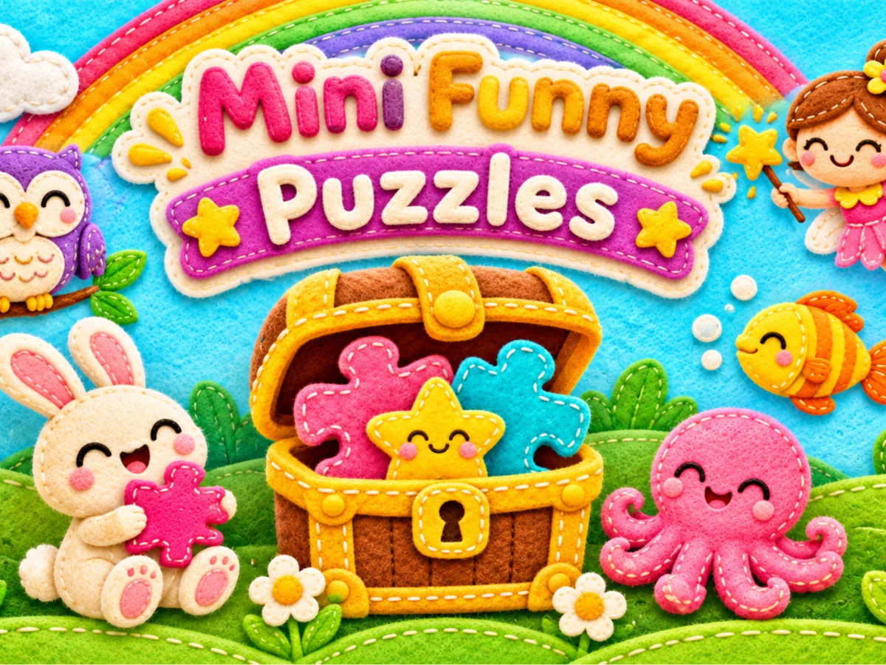
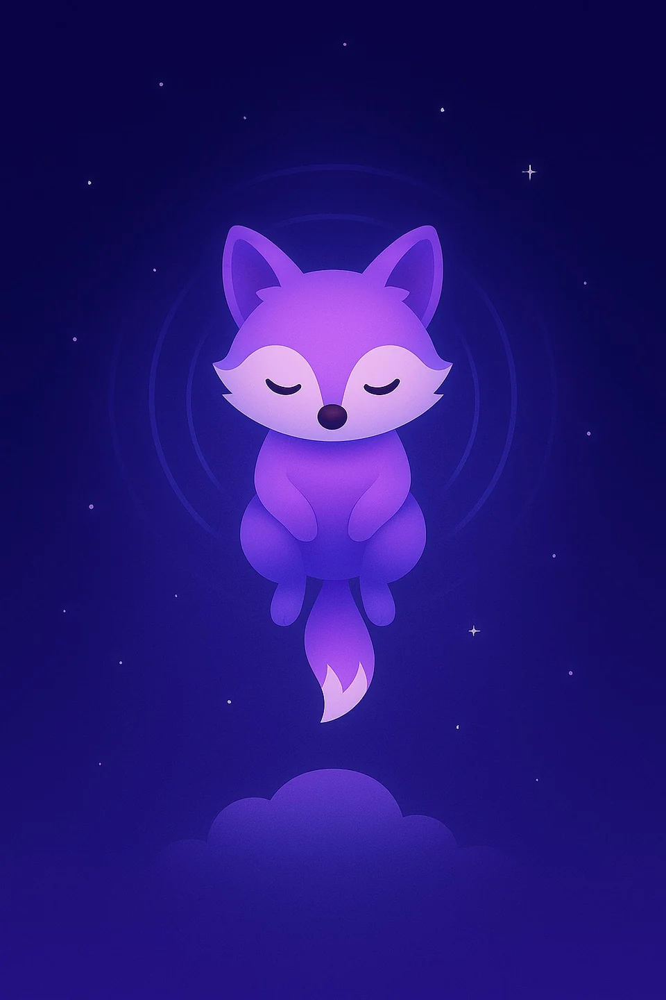

5 aventuras point-and-click
TinyStory
Héroes animales, islas llenas de color y misterios por resolver. Elige tu historia entre las cinco aventuras TinyStory.
iOS · Android · Ordenador, según el juego
Descubrir TinyStoryAnneMu’s Games · AML Creation
Descubre TinyStory y Celestwald: dos colecciones de aventuras point-and-click con mundos llenos de color, personajes entrañables y enigmas curiosos.
Ver todos los juegos ↓5 aventuras point-and-click
Héroes animales, islas llenas de color y misterios por resolver. Elige tu historia entre las cinco aventuras TinyStory.
iOS · Android · Ordenador, según el juego
Descubrir TinyStory
2 aventuras en un mundo encantado
Conviértete en aprendiz de alquimista, descubre el Árbol de los Sueños y continúa el viaje con sus semillas mágicas. Explora Celestwald 1 y 2.
iOS · Android · Steam e itch.io para el primer juego
Descubrir Celestwald 1 & 2Disponible en Google Play y App Store
Buscaminas donde cada casilla segura crea un camino.
Lee las pistas, marca las minas y guía una pequeña luz por mundos llenos de puzles. Empieza con 60 niveles gratis en Android e iOS.
Disponible en Android e iOS



Más mundos por descubrir
Personaliza tu Mochi o explora los puzzles de fichas de Mahjong Castle.

Juegos kawaii y creativos
Crea una mascota virtual Mochi, viste a los pequeños peluches y decora sus habitaciones. Colecciona pegatinas y disfruta de los mini-juegos. La actividad diaria Golden Cloud te permite ganar Bunny Tokens gratis para tu pequeño mundo de peluche.
iOS · Android
Descubrir Mochi Plush Kawaii
Puzzles y lógica
Empareja fichas libres y explora un castillo mágico en 240 niveles y 14 lugares. La muestra gratuita incluye 30 niveles del jardín y cuatro del hielo. Completa el nivel 30 del jardín para desbloquear diseños Classic ilimitados. Disponible en Android, con Adventure Pack opcional mediante una compra única.
Android
Descubrir Mahjong CastleLa colección

Aventuras point-and-click
Seis gatitos, seis pequeñas aventuras. Explora el mundo de cada gato, recoge objetos y resuelve divertidos enigmas point-and-click. Descubre historias diferentes y escenas coloridas en Cats in the Box Adventure para iOS y Android.
iOS · Android
Descubrir Cats in the Box Adventure
Aventuras point-and-click
Ayuda a un pequeño héroe rosa a encontrar los fragmentos de un cristal roto. Explora 30 niveles en los mundos Green, Fire y Candy, recoge objetos y resuelve enigmas. Cuidado con las trampas del camino. Fantasiant combina aventura y puzzles en móvil e itch.io.
iOS · Android · Windows · macOS · Linux
Descubrir Fantasiant · Tiny Hero
Juegos kawaii y creativos
Viste a Lili y a su osito, y decora su habitación con muebles, colores y juguetes. Da rienda suelta a tu creatividad y vuelve a tu habitación guardada. Lili’s Bedroom es un juego de decoración para iOS que funciona sin conexión y sin anuncios.
iOS
Descubrir Lili’s Bedroom
Juego de puzles para niños
Un acogedor juego de puzles de fieltro para niños con formas para encajar, pequeño memory y un nuevo diseño que llegará pronto a la misma ficha de App Store.
iOS · Android · App Store · Google Play
Descubrir Mini Funny Puzzles Google Play
Disponible en Android e iOS
Buscaminas donde cada casilla segura crea un camino. Lee las pistas, marca las minas y guía una pequeña luz por mundos llenos de puzles. Empieza con 60 niveles gratis en Android e iOS.
Android · iOS · Google Play · App Store
Descubrir Lumen Mine Jugar en Google Play Disponible en App Store Ver Short do jogo
Puzzles y lógica
Reconstruye imágenes coloridas con 22 rompecabezas y 132 puzzles cuadrados. Elige la dificultad que prefieras y retoma tu progreso guardado. Puzzles Mix ofrece dos maneras de disfrutar de los puzzles de imágenes en iOS.
iOS
Descubrir Puzzles Mix
Puzzles y lógica
Lee las pistas numéricas, marca las minas ocultas y elige cada movimiento con cuidado. Explora 120 niveles en dos mundos, con minas especiales y movimientos limitados que añaden nuevos retos. Little Minesweeper Guy trae puzzles coloridos de Buscaminas a iOS.
iOS
Descubrir Little Minesweeper Guy
Ritmo y relajación
Toca cuando el círculo alcance el arco luminoso, encadena combos y descubre fondos ilustrados. Elige el tranquilo modo Zen o el más rápido modo Fast. Explora 10 mundos, cinco de ellos gratuitos, con Premium opcional mediante una compra única. Un juego de ritmo para iPhone y iPad.
iOS
Descubrir Zen Circle SpiritMochi Plush Kawaii · 2026
Crea tu Mochi, viste a los pequeños peluches, decora sus habitaciones y colecciona pegatinas. Juega cada día con Golden Cloud para conseguir Bunny Tokens gratis.
Descubrir Mochi
AML Creation · Sonidos y momentos tranquilos
Combina lluvia, olas, chimenea y ruido de fondo para crear tu propio ambiente sonoro. Ajusta cada sonido, configura un temporizador y escucha sin conexión y sin anuncios. Somnifox es una aplicación de sonidos para iPhone y iPad, con funciones gratuitas y acceso Premium opcional.
Descubrir Somnifox ↗